Empieza por el patrón, no por el nivel de alarma
La morfología y la cronología suelen ordenar mejor el problema que una lista extensa de diagnósticos. Describe primero; después decide qué pruebas, seguimiento o derivación necesita.
Una erosión o una costra pueden ser el residuo de una vesícula o ampolla. Examina piel no manipulada y pregunta cómo empezó.
Localizada o generalizada, simétrica, flexural, extensora, acral, agrupada, fotoexpuesta o con predominio mucoso.
Fecha de cada medicamento, última dosis, primera lesión, progresión y reexposiciones. Incluye productos sin receta y fitoterapia.
Prurito frente a dolor, fiebre, edema facial, ingesta, ojos, boca, genitales y síntomas de órgano interno.
En una ampolla
- Tensa o flácida; contenido claro, purulento o hemorrágico.
- Piel normal, eritematosa o urticarial alrededor.
- Prurito, dolor o ausencia de síntomas.
- Lesión intacta frente a erosión secundaria.
En un exantema
- Máculas, pápulas, pústulas, dianas, púrpura o necrosis.
- Inicio en tronco, pliegues, cara o zonas acrales.
- Simetría, confluencia y superficie afectada.
- Respeto o participación de mucosas.
| Patrón | Pregunta que lo orienta | Prueba o conducta inicial |
|---|---|---|
| Localizado y con geometría | ¿Roce, calor, frío, adhesivo, planta, cítrico, producto o picadura en esa zona? | Retirar exposición, curas y seguimiento; amplía si necrosis, dolor desproporcionado o evolución atípica. |
| Agrupado o metamérica unilateral | ¿Pródromo de escozor/dolor y vesículas arracimadas? | Pensar en herpes simple o zóster; PCR de lesión si la morfología, localización o huésped dejan duda. |
| Flácido, purulento o con collarete | ¿Niño, contacto cercano, orificios naturales o costra melicérica? | Impétigo ampolloso; cultivo si extenso, brote, recidiva o fracaso. |
| Dependiente o acral con edema | ¿Insuficiencia venosa/cardiaca/renal, diabetes, neuropatía o inmovilidad? | Valorar causa de fondo, perfusión, infección y presión; no asumir autoinmunidad. |
| Generalizado, simétrico o recurrente | ¿Prurito urticarial, erosiones orales, cicatriz mucosa, fármaco nuevo o lesión sistémica? | Dermatología y confirmación dirigida; protege una lesión reciente para biopsia. |
La cronología farmacológica es parte de la exploración
La mayoría de los exantemas medicamentosos no es una emergencia. El objetivo es reconocer el fenotipo, retirar lo prescindible cuando corresponda, documentar bien y detectar los datos que obligan a ampliar estudio.
Historia que merece quedar escrita
- Todos los fármacos de las 8 semanas previas: nombre, dosis, fecha de inicio, cambios y última toma.
- Incluye intermitentes, rescates, contrastes, vacunas, productos sin receta y fitoterapia.
- Fecha y lugar de la primera lesión, progresión, fiebre y relación con cada exposición.
- Reacciones previas, reexposiciones y evolución tras retirar productos.
- Fenotipo exacto; evita registrar solo “alergia medicamentosa”.
Cuándo pedir analítica dirigida
- Fiebre, edema facial, adenopatías o exantema extenso.
- Púrpura, pústulas generalizadas, ampollas o erosiones.
- Ictericia, oliguria, disnea, dolor torácico o deterioro general.
- Como base: hemograma con fórmula, creatinina/electrolitos, perfil hepático y orina; ampliar por órgano sospechoso.
- Sospecha de DRESS, PEGA, vasculitis o reacción cutánea grave.
Comprueba dolor cutáneo, tono violáceo o necrótico, erosiones mucosas, ampollas, pústulas no foliculares, púrpura, edema facial, fiebre alta, adenopatías y síntomas de órgano. Si alguno está presente, el aspecto “morbiliforme” no basta para asegurar benignidad.
| Patrón | Morfología y cronología orientativas | Siguiente paso habitual |
|---|---|---|
| Exantema morbiliforme no complicado | Habitualmente 4–14 días tras iniciar el fármaco; máculo-pápulas pruriginosas, simétricas y tronculares, con mucosas respetadas. | Retirar el sospechoso si es seguro, emoliente/corticoide tópico y antihistamínico si prurito; revisión en 24–48 h si reciente o extenso. |
| Exantema fijo medicamentoso | Placa redonda u oval bien delimitada que reaparece en el mismo lugar —a menudo en horas tras reexposición— y deja hiperpigmentación. | Fotografiar y localizar el responsable; si es generalizado, ampolloso o mucoso requiere valoración especializada. |
| PEGA | Inicio a menudo rápido; pústulas no foliculares sobre eritema, con frecuencia desde pliegues, fiebre y neutrofilia. | Retirar el sospechoso, diferenciar de infección y psoriasis pustulosa, y valorar extensión y órgano interno; biopsia si duda. |
| DRESS | Habitualmente 2–8 semanas después del inicio; fiebre, exantema extenso, edema facial, adenopatías, alteraciones hematológicas y posible lesión de órgano. | Estudio sistemático y por órgano, valoración hospitalaria y seguimiento prolongado; RegiSCAR apoya, pero no sustituye el juicio clínico. |
| Eritema multiforme, diferencial reactivo | Dianas típicas elevadas y fijas, acrales, con frecuencia tras herpes simple; mucosa ausente o limitada. | Separarlo de dianas atípicas planas, dolor, necrosis y afectación mucosa extensa de SSJ/NET. |
Patrones frecuentes y diferenciales
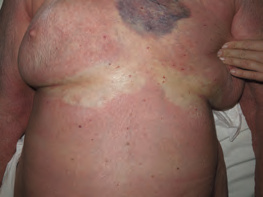
Patrón máculo-papular simétrico y troncular. La imagen no sustituye la revisión de mucosas ni el contexto sistémico.
Recopilación Dermatología 2025 · pág. 90.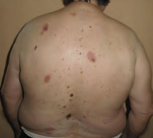
Placas redondeadas bien delimitadas que reaparecen en la misma localización.
Recopilación Dermatología 2025 · pág. 90.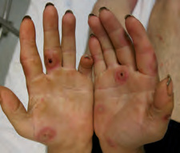
Dianas típicas, elevadas y acrales: un patrón reactivo que debe distinguirse de SSJ/NET.
Recopilación Dermatología 2025 · pág. 76.Fenotipos que exigen buscar afectación sistémica
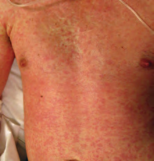
En el caso fuente: tres semanas tras alopurinol, con fiebre y hepatitis. El diagnóstico no se hace por la fotografía aislada.
Recopilación Dermatología 2025 · pág. 91.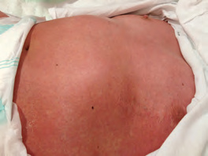
Pústulas no foliculares confluentes sobre una base eritematosa tras amoxicilina.
Recopilación Dermatología 2025 · pág. 90.La relación entre fármaco y lesión es más útil que una lista de tratamientos sin fechas.
No reintroduzcas por prueba un medicamento sospechoso de reacción grave.
Registra morfología, extensión, mucosas, analítica y evolución, no solo “alergia”.
Fiebre con edema facial, citopenias, hepatitis, nefritis, dolor cutáneo o despegamiento cambian el circuito.
La piel abre el diagnóstico; el órgano define la gravedad
Un exantema extenso con fiebre, edema facial o alteración hematológica semanas después de un fármaco obliga a buscar lesión interna aunque el paciente no refiera todavía síntomas claros. El hígado y el riñón son frecuentes, pero también pueden afectarse pulmón, corazón, sistema nervioso u otros órganos.
Evaluación inicial
- Retirar inmediatamente el fármaco o fármacos plausibles y no reexponer.
- Constantes, superficie, edema facial, adenopatías y exploración por órganos.
- Hemograma con fórmula, función renal/electrolitos, orina y perfil hepático.
- Coagulación si hepatitis relevante; ECG, troponina/BNP o pruebas respiratorias si síntomas o hallazgos.
- RegiSCAR ayuda a ordenar criterios y diferenciales, pero una puntuación temprana puede cambiar con la evolución.
Tratamiento y vigilancia
- Ingreso y participación del especialista según gravedad y órgano afectado.
- El consenso internacional estratifica tratamiento por gravedad: tópicos de muy alta potencia en formas leves y glucocorticoide sistémico en formas graves.
- La retirada de corticoide debe ser lenta y dirigida; las reducciones rápidas favorecen recaídas.
- Control analítico según el órgano inicial, incluso si la piel mejora.
- Revisiones desde el primer mes y durante al menos los primeros 6 meses; incluir función tiroidea en convalecencia.
Integra cronología, fiebre, extensión, edema facial, adenopatías, hematología y daño orgánico. Infecciones, enfermedad autoinmune, neoplasia hematológica y otros exantemas medicamentosos forman parte del diferencial.
La tensión orienta al plano de separación; no cierra el diagnóstico
Edad, prurito frente a dolor, mucosas, distribución, fármacos e infección completan el patrón. Una ampolla localizada y explicable no tiene la misma prioridad que erosiones mucosas o una dermatosis extensa.
| Patrón | Claves | Orientación habitual |
|---|---|---|
| Penfigoide ampolloso | Persona mayor, prurito intenso, fase urticarial y ampollas tensas en tronco o extremidades; mucosa menos frecuente. | Confirmación dermatológica y planificación del tratamiento según extensión, comorbilidad y capacidad de curas. |
| Pénfigo vulgar | Ampollas flácidas que se rompen, erosiones dolorosas y afectación oral frecuente, a veces previa a la piel. | Valoración dermatológica rápida; la ingesta, el dolor, la extensión y la infección condicionan el destino. |
| Penfigoide de mucosas | Erosiones y ampollas con tendencia a cicatrizar; ojo, laringe, esófago o genitales pueden dejar secuelas. | Derivación especializada por órgano; la afectación ocular o respiratoria acelera la valoración. |
| Dermatitis herpetiforme | Prurito intenso, vesículas o excoriaciones simétricas en codos, rodillas, glúteos o sacro; relación con celiaquía. | Confirmar antes de dieta o dapsona y completar estudio celíaco dirigido. |
| Penfigoide gestacional | Embarazo o posparto; prurito intenso y placas urticariales que suelen comenzar alrededor del ombligo y evolucionan a vesículas/ampollas. | Dermatología y Obstetricia; diferenciar de erupción polimorfa —suele respetar ombligo— y colestasis —prurito sin lesión primaria—. |
| Eczema vesicular o ponfólix | Vesículas profundas y muy pruriginosas en manos o pies, a menudo simétricas. | Valorar desencadenantes y diagnóstico diferencial; seguimiento habitual si no hay sobreinfección ni extensión relevante. |
Ampolla tensa frente a erosión por ampolla flácida

Techo conservado y ampollas tensas sobre una fase urticarial pruriginosa.
Recopilación Dermatología 2025 · pág. 7.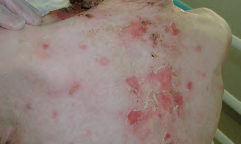
Las ampollas flácidas se rompen pronto; por eso predominan las erosiones.
Recopilación Dermatología 2025 · pág. 72.Vesículas agrupadas o acrales pruriginosas
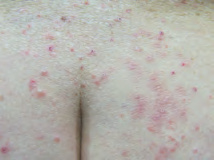
Distribución glútea simétrica; el rascado puede ocultar las vesículas.
Recopilación Dermatología 2025 · pág. 75.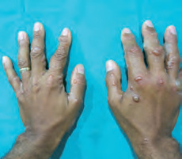
Vesículas o pequeñas ampollas muy pruriginosas y simétricas en las manos.
Recopilación Dermatología 2025 · pág. 76.| Sospecha | Confirmación | Plan compartido |
|---|---|---|
| Penfigoide ampolloso | Histología lesional + inmunofluorescencia directa perilesional; serología BP180/BP230 como apoyo. | El corticoide tópico potente es tratamiento principal cuando extensión y cuidadores lo permiten; el sistémico y los ahorradores se individualizan en Dermatología. Revisar gliptinas y otros desencadenantes sin suspender tratamientos esenciales de forma improvisada. |
| Pénfigo vulgar | Histología lesional + inmunofluorescencia perilesional y anticuerpos anti-desmogleína 1/3. | Tratamiento sistémico precoz especializado —rituximab y glucocorticoide forman parte del estándar actual—, además de curas, analgesia, nutrición e higiene oral. |
| Penfigoide de mucosas | Inmunofluorescencia de mucosa/piel perilesional y estudio serológico dirigido; puede requerir repetir biopsia. | Equipo por órganos. Ojo rojo persistente, cicatriz conjuntival, disfonía, disfagia o disnea no deben esperar al circuito dermatológico rutinario. |
| Dermatitis herpetiforme | Inmunofluorescencia directa de piel sana perilesional y serología celíaca mientras aún consume gluten. | No iniciar dieta sin gluten antes de completar el estudio. Dieta y, si precisa, dapsona bajo supervisión, con G6PD y monitorización hematológica/hepática. |
| Ponfólix | Clínico; micología/cultivo o pruebas epicutáneas si patrón o recurrencia lo justifican. | Compresas frías, emoliente y corticoide tópico adecuado a piel palmo-plantar; tratar sobreinfección solo si está presente. |
La distribución puede evitar una biopsia equivocada
Una ampolla aislada no equivale a penfigoide. Roce, presión mantenida, edema, diabetes, quemadura, fitofotodermatitis, infección o picadura suelen dejar pistas anatómicas y temporales más claras que la tensión del techo.
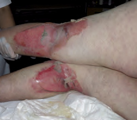
Las llamadas “ampollas del coma” aparecen en áreas de apoyo tras inmovilidad mantenida; obliga a valorar daño por presión y causa de la inmovilidad.
Recopilación Dermatología 2025 · pág. 76.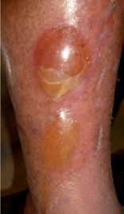
Ampolla acral o pretibial espontánea y poco inflamatoria en una persona con diabetes; es un diagnóstico de exclusión y no elimina el riesgo de herida o infección.
Recopilación Dermatología 2025 · pág. 79.Geometría de contacto, exposición a calor o combinación de planta/cítrico y sol; pregunta antes de asumir enfermedad inmunológica.
Ampollas tensas en extremidad muy edematosa; trata la causa del edema y protege la piel.
Vesículas agrupadas con pródromo y distribución labial, genital o metamérica; PCR si presentación atípica.
Ampolla flácida que deja collarete, sobre todo en infancia; busca contacto, costra y signos de infección.
Sin mucosas, dolor relevante, fiebre ni extensión progresiva; permite estudio y seguimiento ordenados.
Especialmente si condiciona curas, sueño, ingesta o calidad de vida, o se sospecha enfermedad autoinmune.
La participación ocular, oral o genital importante y la afectación general cambian la prioridad.
En sospecha autoinmune, el lugar y el recipiente importan
Tomar una sola muestra del centro erosionado puede dejar el estudio incompleto. Coordina previamente con Dermatología y Anatomía Patológica.
Histología convencional
Biopsia de una vesícula/ampolla reciente —idealmente de menos de 24 horas— incluyendo borde lesional y piel vecina, con profundidad suficiente. Se envía en formol para localizar el plano de separación y el infiltrado.
Inmunofluorescencia directa
Piel o mucosa perilesional intacta, aproximadamente a menos de 1 cm de una lesión reciente; no el centro necrótico ni una erosión antigua. Se envía en medio de Michel, suero salino o congelada según el laboratorio: nunca en formol.
Histología convencional en formol.
Inmunofluorescencia en el medio específico.
BP180/BP230, desmogleínas u otros anticuerpos según la hipótesis.
Confirma cuántas muestras se necesitan, qué lesión elegir, dónde tomar cada una y cómo etiquetar los recipientes. Anota en cada solicitud diagnóstico sospechado, localización y tipo de muestra. Si no puedes garantizar la técnica, deriva sin destruir la lesión útil; una urgencia clínica no debe retrasar tratamiento por esperar una biopsia perfecta.
Cuándo una dermatosis sí no puede esperar
No es la forma habitual de presentación dermatológica. Cambia de circuito si aparecen piel dolorosa, necrosis o despegamiento, afectación mucosa importante, progresión rápida o datos de órgano interno.
Especialmente con dianas atípicas planas, ampollas flácidas o erosiones extensas.
Dolor, erosiones, fotofobia, dificultad para tragar o síntomas respiratorios elevan la prioridad.
Edema facial, adenopatías, hepatitis, nefritis, citopenias, disnea o deterioro general requieren estudio rápido.
La velocidad y el dolor pesan más que el aspecto llamativo aislado de una lesión estable.
SSJ/NET: no es el punto de partida de cada exantema
Se sospecha por la combinación de piel dolorosa, dianas atípicas planas o necrosis, erosiones mucosas y despegamiento. El recopilatorio local contiene umbrales contradictorios; se aplica la clasificación de consenso.
Necrosis mucocutánea con despegamiento limitado.
Fenotipo intermedio SSJ/NET.
Despegamiento extenso y fallo cutáneo grave.
Clasifica por epidermis ya desprendida o fácilmente desprendible, no por toda el área eritematosa. La palma completa del propio paciente aproxima un 1 %; registra el porcentaje y repítelo porque puede progresar.
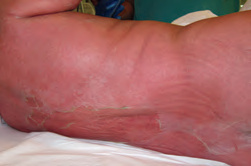
Signo de Nikolsky positivo en NET; no debe provocarse repetidamente.
Recopilación Dermatología 2025 · pág. 92.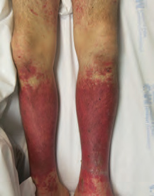
Dianas atípicas y lesiones erosivas con 10–30 % de superficie despegada en el caso fuente.
Recopilación Dermatología 2025 · pág. 92.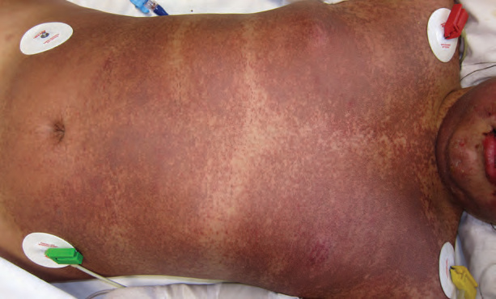
Afectación superior al 30 % y erosiones mucosas en el caso fuente.
Recopilación Dermatología 2025 · pág. 92.Reconocimiento
- Pródromo febril y mal estado seguido de piel dolorosa.
- Máculas eritemato-violáceas o dianas atípicas planas.
- Erosiones dolorosas en una o varias mucosas.
- Ampollas flácidas, necrosis y despegamiento.
Primeras medidas
- Retirar inmediatamente el agente causal probable.
- Constantes, peso basal, analgesia, temperatura, balance hídrico y analítica dirigida.
- Dermatología y equipo/unidad con experiencia en fallo cutáneo grave.
- Revisión oftalmológica temprana y diaria durante la fase aguda si hay afectación ocular.
- Curas suaves, preservar epidermis desprendida como cubierta cuando proceda y usar apósitos no adherentes.
- No administrar antibiótico sistémico profiláctico: tratar infección clínica y guiarse por cultivos.
| Rasgo | Eritema multiforme | SSJ/NET |
|---|---|---|
| Lesión guía | Diana típica elevada con tres zonas, fija y acral. | Diana atípica plana, mácula violácea, ampolla flácida, necrosis o erosión. |
| Distribución | Dorso de manos, extremidades y cara; puede afectar palmas. | Tronco y cara con progresión; despegamiento variable. |
| Mucosa | Ausente o limitada, con frecuencia labial en EM major. | Erosiones dolorosas importantes, a menudo en varias mucosas. |
| Contexto | Con frecuencia infección por herpes simple. | Habitualmente fármaco reciente; piel dolorosa y repercusión sistémica. |
La guía BAD recomienda ingreso sin demora en una Unidad de Quemados o UCI con experiencia cuando la pérdida epidérmica supera el 10 %. SCORTEN se calcula durante las primeras 24 horas, sin retrasar retirada del fármaco, soporte ni traslado.
El tratamiento inmunomodulador no se inicia como una receta automática. Se individualiza por el equipo experto según tiempo de evolución, gravedad, contraindicaciones y protocolo local. Tras recuperarse, no se realiza provocación rutinaria; el estudio alergológico solo se plantea en unidades expertas cuando el responsable no está claro o evitarlo causa un perjuicio importante.
Un diagnóstico provisional puede ser suficiente si deja un buen plan
La mayoría de los pacientes no necesita una etiqueta definitiva el primer día, pero sí documentación, circuito de revisión y criterios concretos para adelantar la valoración.
Con consentimiento, registra lesión primaria, distribución, extensión, mucosas y evolución para comparar en la revisión.
Deja por escrito sospechosos, fechas, retiradas y qué debe evitarse hasta completar el estudio.
Seguimiento habitual, Dermatología preferente o valoración hospitalaria según extensión, síntomas, mucosas y capacidad de cuidados.
Fiebre, piel dolorosa, ampollas nuevas, erosiones mucosas, edema facial, ictericia, oliguria o progresión rápida.
Registro útil en la historia
- Fármaco exacto, indicación, dosis, fechas y latencia.
- Fenotipo: morbiliforme, fijo, PEGA, DRESS, SSJ/NET u otro; no solo “rash”.
- Extensión, mucosas, órgano afectado, analítica y necesidad de ingreso.
- Grado de certeza del responsable y medicamentos tolerados después.
- Lista concreta de qué evitar; no ampliar familias sin justificar reactividad cruzada.
Seguimiento proporcionado
- Exantema simple reciente/extenso: revisión clínica en 24–48 horas si existe riesgo de progresión.
- Enfermedad ampollar: contar lesiones nuevas, curas, dolor, sueño, ingesta e infección.
- DRESS: controles desde el primer mes y durante al menos 6 meses, dirigidos por órgano y con cribado tiroideo en convalecencia.
- SSJ/NET: secuelas oculares, orales, genitales, respiratorias y psicológicas, además de prevención de reexposición.
- Reacción grave o inesperada: notificar al Sistema Español de Farmacovigilancia mediante Tarjeta Amarilla.
“Exantema por amoxicilina, 7 días tras inicio, sin mucosas ni órgano, agosto de 2026” es más útil que “alergia a antibióticos”. En una reacción cutánea grave, añade fármacos sospechosos y contraindicaciones provisionales hasta la valoración experta.
Referencias utilizadas
La recopilación local aporta el mapa y las fotografías. Los umbrales y decisiones críticas se contrastaron con guías y consensos específicos.
- European Academy of Dermatology and Venereology. Updated S2K guideline for bullous pemphigoid, 2022.
- European Academy of Dermatology and Venereology. Updated S2K guideline for pemphigus vulgaris and foliaceus, 2020.
- European guideline. S2K diagnosis and treatment of mucous membrane pemphigoid, 2022.
- British Association of Dermatologists. UK guidelines for the management of Stevens–Johnson syndrome/toxic epidermal necrolysis in adults: summary.
- Brüggen MC et al. Management of Adult Patients With DRESS: A Delphi-Based International Consensus. JAMA Dermatology, 2024.
- Agencia Española de Medicamentos y Productos Sanitarios. Notificación de sospechas de reacciones adversas: Tarjeta Amarilla.
- Actualización Dermatología 2025 - Recopilación, capítulos 11 y 14. Material local proporcionado; utilizado como fuente secundaria y procedencia de las fotografías clínicas.